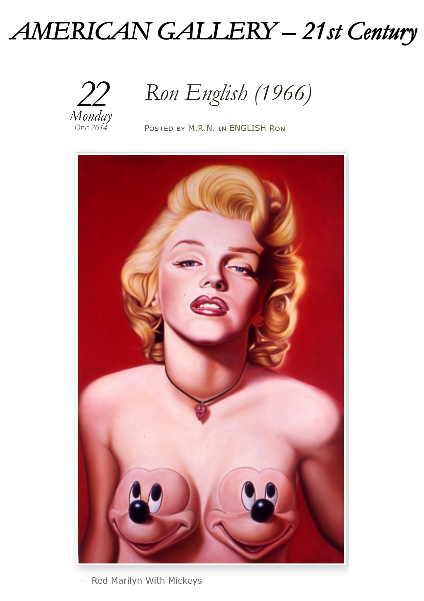
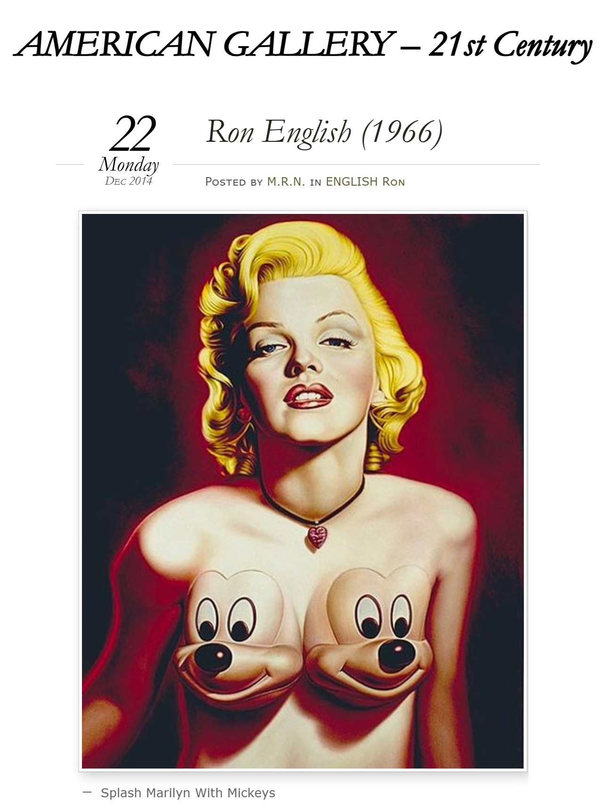

Exhibitions
Bipolar Surrealism, Opera Gallery, New York, New York, US, May 24–June 11, 2001.

Literature
Ron English, Abject Expressionism: The Art of Ron English (San Francisco: Last Gasp, 2007), p. 96. ISBN 978-0867196894.

Marilyn in Art (London: Pop Art Books, 2006), pp. 68–69, 123. ISBN 1-904957-02-1.

Miami New Times / Artquake, December 2–8, 2004, p. 1 scan.

Miami New Times / Artquake, December 2–8, 2004, p. 2 scan.

Miami New Times / Artquake, December 2–8, 2004, p. 3 scan.

OC Weekly, April 15, 2005, p. 1 scan.

OC Weekly, April 15, 2005, p. 2 scan.

Seattle Weekly, May 18–24, 2005.

Milk Magazine, October 1, 2009.

Butterfly Art News, 2015.

Butterfly Art News, 2015, second archived scan.

The Village Voice, May 4, 1999.

The Durango Telegraph, March 10, 2005.


La Voz de Galicia, March 21, 2007.

Notes
Also known as Marilyn with Mickey Mounds.
In Abject Expressionism, the year of this work was erroneously listed as 2006.
This composition was reproduced as a poster.
The American Gallery online appearance shows the image flipped horizontally.
Ancillary Documentation




Selected Online Circulation
Selected examples of the work’s online circulation, reproduction, or discussion. This list is not exhaustive; it is intended to document representative appearances of the image beyond formal exhibition and publication records.